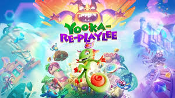

Yooka-Replaylee
Genres: 3D Platformer
Website
Developer: Playtonic Games
Publisher: PM Studios Inc.
Platforms: PC, PlayStation 5, Xbox Series X, Nintendo Switch 2
Released: 2025, October 9
Rated: E +10 for Everyone +10
Embark on an epic open-world 3D platforming collectathon adventure with Yooka and Laylee! The search for Pagies starts anew in Yooka-Replaylee, the enhanced definitive version of the beloved indie darling with all new challenges, secrets, mechanics, and accessibility options. Yooka-Replaylee is the definitive remastered and enhanced version of the 3D indie platforming collectathon darling, Yooka-Laylee (2017), developed by key creative talent behind the Banjo-Kazooie and Donkey Kong Country games. New remixed challenges and old favourites await as you embark to explore the huge, beautiful open worlds as the lovable buddy-duo Yooka (the green one) and Laylee (the purple one) once more, all while backed by a beautiful orchestral soundtrack. Did we mention there is a map now? A shiny new currency? And tons of customisation options? The favourite buddy duo has never moved, looked, or sounded better! Corporate creep Capital B is on a quest to steal all the books in the world and turn them into cold hard cash. BUT the most powerful book in the universe is right under his crooked nose in the neighbouring Shipwreck Creek, home to our adventurous buddy-duo, Yooka and Laylee! Seeing their prized book stolen pulls them into a wacky adventure across many fantastical & imaginative worlds, full of colourful characters and vault-loads of shiny collectibles. Can you find all of the magical Pagies from their book and save the day? FEATURES: MORE BEAUTIFUL THAN EVER -- With an art and animations overhaul and enhanced performance and resolution, the favourite buddy duo has never looked or moved better. NEW AND IMPROVED CHALLENGES -- Improvements to existing in-game challenges and many entirely new challenges to discover and undertake! NEW COLLECTIBLE CURRENCY -- Capital B's inept minions have dropped their hard-earned coins all over the place. Collect the official currency of the Hivory Towers to spend on video games' most beloved sentient vending machine. NAVIGATING THE WORLD -- Now you can get lost in the game, not in the world! A brand-new world map and challenges tracker helps you know where you are and what needs to be done. Hooray! VENDI HAS PLENTY TO OFFER -- Tonics are back with all new flavours! With the option to equip multiple game-changing enhancements, you can truly customise your playstyle. And as if that wasn't enough, Vendi has new lines of merchandise for the modern fashionable adventurer. REVISED CONTROLS & CAMERA -- A new tweaked move set allows you to combine moves more fluidly while the new camera controls makes framing the action a breeze. A DREAMY ORCHESTRAL SOUNDTRACK -- The original score from famed video game composers Grant Kirkhope (Banjo-Kazooie) and David Wise (Donkey Kong Country) returns but as a beautifully arranged orchestral score. Now seriously, clean out those ears.